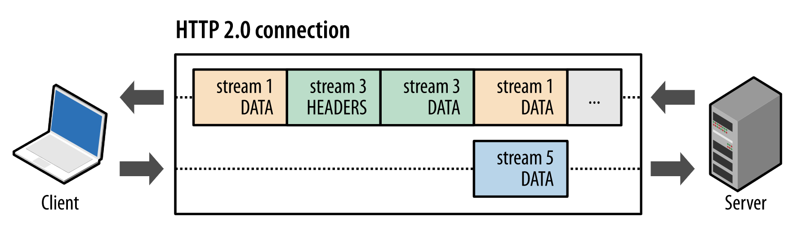
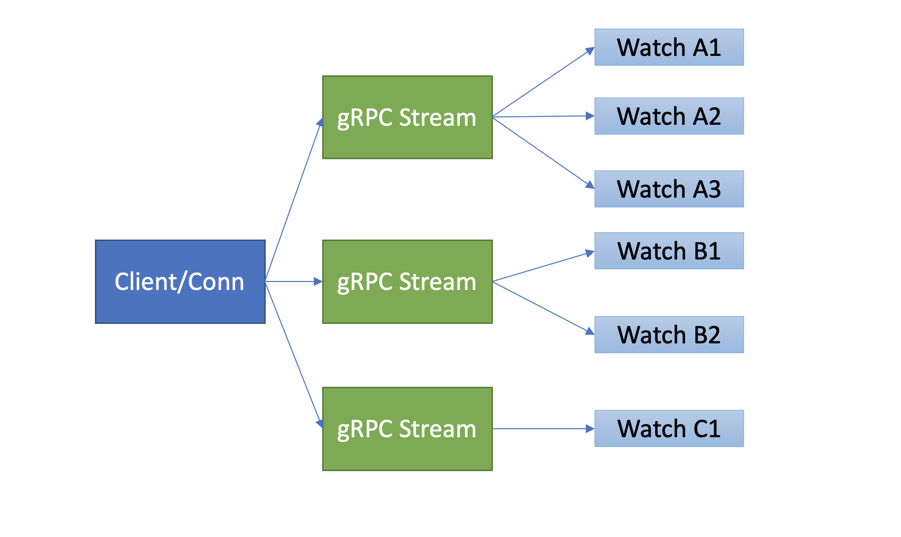
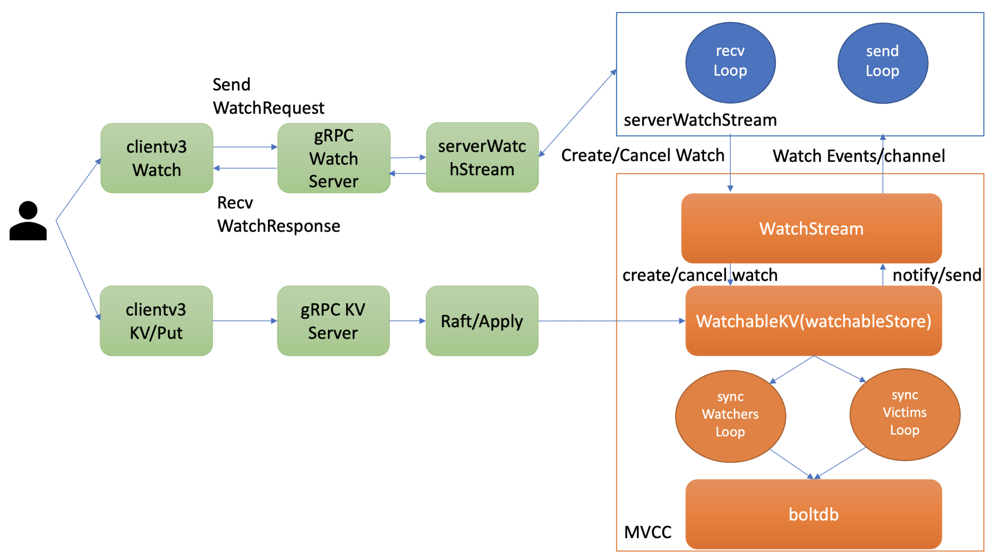
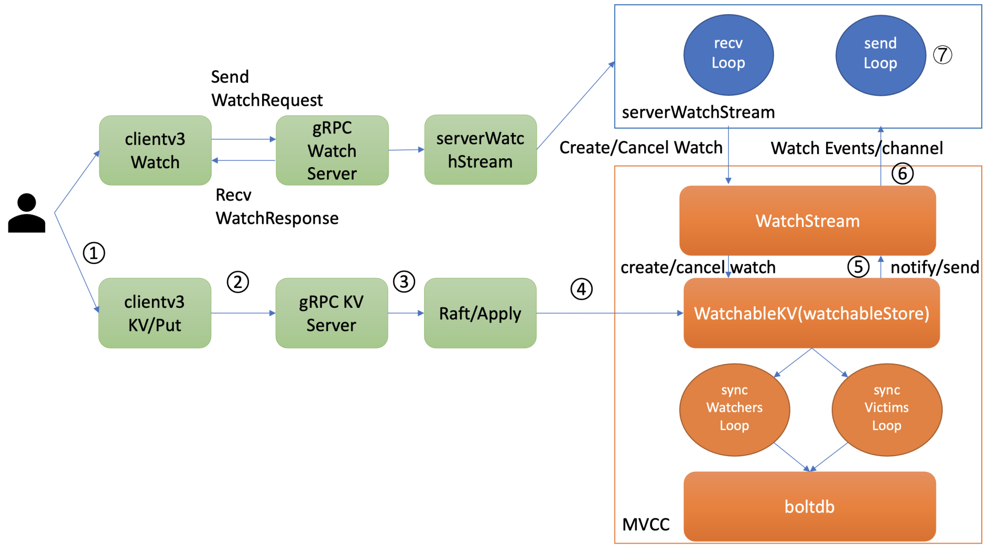
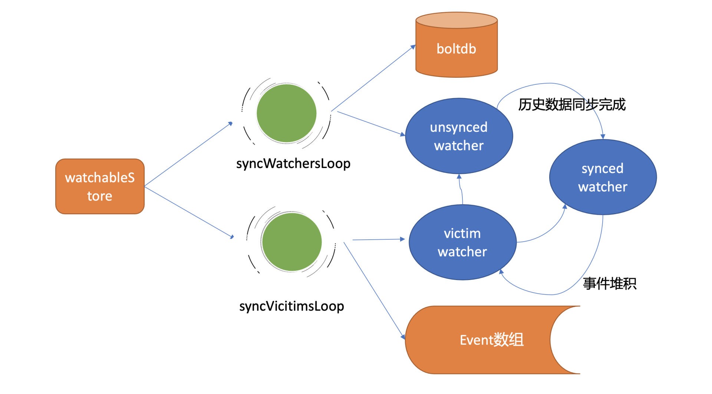
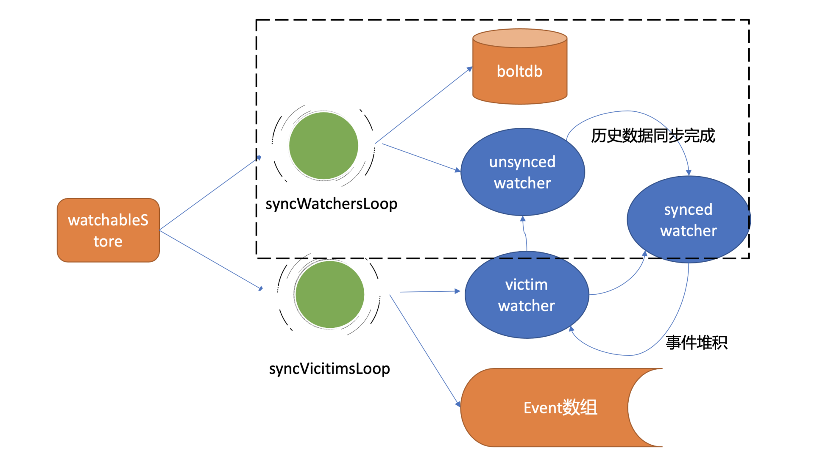
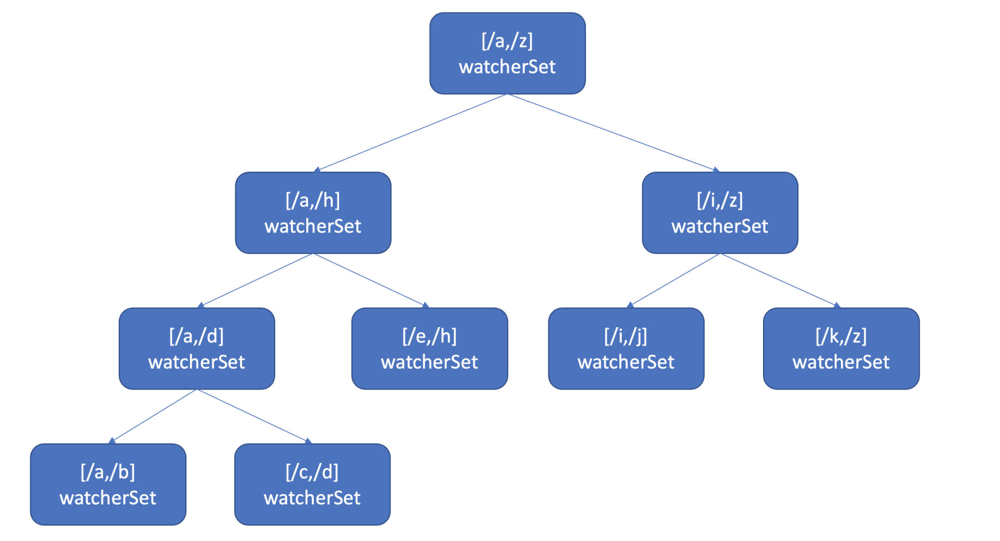

Watch 机制
Watch机制
在Kubernetes中，各种各样的控制器实现了Deployment、StatefulSet、Job等功能强大的Workload。控制器的核心思想是监听、比较资源实际状态与期望状态是否一致，若不一致则进行协调工作，使其最终一致。
那么当你修改一个Deployment的镜像时，Deployment控制器是如何高效的感知到期望状态发生了变化呢？
要回答这个问题，得从etcd的Watch特性说起，它是Kubernetes控制器的工作基础。今天我和你分享的主题就是etcd的核心特性Watch机制设计实现，通过分析Watch机制的四大核心问题，让你了解一个变化数据是如何从0到1推送给client，并给你介绍Watch特性从etcd v2到etcd v3演进、优化过程。
etcd V3 的 Watch 机制支持 Watch 某个固定的 key，也支持 Watch 一个范围(可以用于模拟目录的结构的 Watch)，所以 watchGroup 包含两种 watcher，一种是 key watchers，数据结构是每个 key 对应一组 watcher，另外一种是 range watchers，数据结构是一个 IntervalTree,方便通过区间查找到对应的 watcher。
Watch特性初体验
启动一个空集群，更新两次key hello后，使用Watch特性如何获取key hello的历史修改记录呢？
如下所示，你可以通过下面的watch命令，带版本号监听key hello，集群版本号可通过endpoint status命令获取，空集群启动后的版本号为1。
执行后输出如下代码所示，两个事件记录分别对应上面的两次的修改，事件中含有key、value、各类版本号等信息，你还可以通过比较create_revision和mod_revision区分此事件是add还是update事件。
watch命令执行后，你后续执行的增量put hello修改操作，它同样可持续输出最新的变更事件给你。
$ etcdctl put hello world1
$ etcdctl put hello world2
$ etcdctl watch hello -w=json --rev=1
{
"Events":[
{
"kv":{
"key":"aGVsbG8=",
"create_revision":2,
"mod_revision":2,
"version":1,
"value":"d29ybGQx"
}
},
{
"kv":{
"key":"aGVsbG8=",
"create_revision":2,
"mod_revision":3,
"version":2,
"value":"d29ybGQy"
}
}
],
"CompactRevision":0,
"Canceled":false,
"Created":false
}
从以上初体验中，你可以看到，基于Watch特性，你可以快速获取到你感兴趣的数据变化事件，这也是Kubernetes控制器工作的核心基础。在这过程中，其实有以下四大核心问题：
第一，client获取事件的机制，etcd是使用轮询模式还是推送模式呢？两者各有什么优缺点？
第二，事件是如何存储的？ 会保留多久？watch命令中的版本号具有什么作用？
第三，当client和server端出现短暂网络波动等异常因素后，导致事件堆积时，server端会丢弃事件吗？若你监听的历史版本号server端不存在了，你的代码该如何处理？
第四，如果你创建了上万个watcher监听key变化，当server端收到一个写请求后，etcd是如何根据变化的key快速找到监听它的watcher呢？
接下来我就和你分别详细聊聊etcd Watch特性是如何解决这四大问题的。搞懂这四个问题，你就明白etcd甚至各类分布式存储Watch特性的核心实现原理了。
轮询 vs 流式推送
首先第一个问题是client获取事件机制，etcd是使用轮询模式还是推送模式呢？两者各有什么优缺点？
答案是两种机制etcd都使用过。
在etcd v2 Watch机制实现中，使用的是HTTP/1.x协议，实现简单、兼容性好，每个watcher对应一个TCP连接。client通过HTTP/1.1协议长连接定时轮询server，获取最新的数据变化事件。
然而当你的watcher成千上万的时，即使集群空负载，大量轮询也会产生一定的QPS，server端会消耗大量的socket、内存等资源，导致etcd的扩展性、稳定性无法满足Kubernetes等业务场景诉求。
etcd v3的Watch机制的设计实现并非凭空出现，它正是吸取了etcd v2的经验、教训而重构诞生的。
在etcd v3中，为了解决etcd v2的以上缺陷，使用的是基于HTTP/2的gRPC协议，双向流的Watch API设计，实现了连接多路复用。
HTTP/2协议为什么能实现多路复用呢？

在HTTP/2协议中，HTTP消息被分解独立的帧（Frame），交错发送，帧是最小的数据单位。每个帧会标识属于哪个流（Stream），流由多个数据帧组成，每个流拥有一个唯一的ID，一个数据流对应一个请求或响应包。
如上图所示，client正在向server发送数据流5的帧，同时server也正在向client发送数据流1和数据流3的一系列帧。一个连接上有并行的三个数据流，HTTP/2可基于帧的流ID将并行、交错发送的帧重新组装成完整的消息。
通过以上机制，HTTP/2就解决了HTTP/1的请求阻塞、连接无法复用的问题，实现了多路复用、乱序发送。
etcd基于以上介绍的HTTP/2协议的多路复用等机制，实现了一个client/TCP连接支持多gRPC Stream， 一个gRPC Stream又支持多个watcher，如下图所示。同时事件通知模式也从client轮询优化成server流式推送，极大降低了server端socket、内存等资源。

当然在etcd v3 watch性能优化的背后，也带来了Watch API复杂度上升, 不过你不用担心，etcd的clientv3库已经帮助你搞定这些棘手的工作了。
在clientv3库中，Watch特性被抽象成Watch、Close、RequestProgress三个简单API提供给开发者使用，屏蔽了client与gRPC WatchServer交互的复杂细节，实现了一个client支持多个gRPC Stream，一个gRPC Stream支持多个watcher，显著降低了你的开发复杂度。
同时当watch连接的节点故障，clientv3库支持自动重连到健康节点，并使用之前已接收的最大版本号创建新的watcher，避免旧事件回放等。
历史版本存储
滑动窗口 vs MVCC
再看事件是如何存储的？ 会保留多久呢？watch命令中的版本号具有什么作用？
第二个问题的本质是历史版本存储，etcd经历了从滑动窗口到MVCC机制的演变，滑动窗口是仅保存有限的最近历史版本到内存中，而MVCC机制则将历史版本保存在磁盘中，避免了历史版本的丢失，极大的提升了Watch机制的可靠性。
etcd v2滑动窗口是如何实现的？它有什么缺点呢？
它使用的是如下一个简单的环形数组来存储历史事件版本，当key被修改后，相关事件就会被添加到数组中来。若超过eventQueue的容量，则淘汰最旧的事件。在etcd v2中，eventQueue的容量是固定的1000，因此它最多只会保存1000条事件记录，不会占用大量etcd内存导致etcd OOM。
type EventHistory struct {
Queue eventQueue
StartIndex uint64
LastIndex uint64
rwl sync.RWMutex
}
但是它的缺陷显而易见的，固定的事件窗口只能保存有限的历史事件版本，是不可靠的。当写请求较多的时候、client与server网络出现波动等异常时，很容易导致事件丢失，client不得不触发大量的expensive查询操作，以获取最新的数据及版本号，才能持续监听数据。
特别是对于重度依赖Watch机制的Kubernetes来说，显然是无法接受的。因为这会导致控制器等组件频繁的发起expensive List Pod等资源操作，导致APIServer/etcd出现高负载、OOM等，对稳定性造成极大的伤害。
etcd v3的MVCC机制，就是为解决etcd v2 Watch机制不可靠而诞生。相比etcd v2直接保存事件到内存的环形数组中，etcd v3则是将一个key的历史修改版本保存在boltdb里面。boltdb是一个基于磁盘文件的持久化存储，因此它重启后历史事件不像etcd v2一样会丢失，同时你可通过配置压缩策略，来控制保存的历史版本数。
最后watch命令中的版本号具有什么作用呢?
版本号是etcd逻辑时钟，当client因网络等异常出现连接闪断后，通过版本号，它就可从server端的boltdb中获取错过的历史事件，而无需全量同步，它是etcd Watch机制数据增量同步的核心。
如何保障推送事件的可靠性
当client和server端出现短暂网络波动等异常因素后，导致事件堆积时，server端会丢弃事件吗？若你监听的历史版本号server端不存在了，你的代码该如何处理？
第三个问题的本质是 **可靠事件推送机制**，要搞懂它，我们就得弄懂etcd Watch特性的整体架构、核心流程，下图是Watch特性整体架构图。
整体架构

当你通过etcdctl或API发起一个watch key请求的时候，etcd的gRPCWatchServer收到watch请求后，会创建一个serverWatchStream, 它负责接收client的gRPC Stream的create/cancel watcher请求(recvLoop goroutine)，并将从MVCC模块接收的Watch事件转发给client(sendLoop goroutine)。
当serverWatchStream收到create watcher请求后，serverWatchStream会调用MVCC模块的WatchStream子模块分配一个watcher id，并将watcher注册到MVCC的WatchableKV模块。
在etcd启动的时候，WatchableKV模块会运行syncWatchersLoop和syncVictimsLoop goroutine，分别负责不同场景下的事件推送，它们也是Watch特性可靠性的核心之一。
从架构图中你可以看到Watch特性的核心实现是WatchableKV模块，下面我就为你抽丝剥茧，看看"etcdctl watch hello -w=json --rev=1"命令在WatchableKV模块是如何处理的？面对各类异常，它如何实现可靠事件推送？
etcd核心解决方案是复杂度管理，问题拆分。
etcd根据不同场景，对问题进行了分解，将watcher按场景分类，实现了轻重分离、低耦合。同时，每个 WatchableStore 包含两种 watcherGroup，一种是 synced，一种是 unsynced，前者表示该 group 的 watcher 数据都已经同步完毕，在等待新的变更，后者表示该 group 的 watcher 数据同步落后于当前最新变更，还在追赶。
synced watcher，顾名思义，表示此类watcher监听的数据都已经同步完毕，在等待新的变更。
如果你创建的watcher未指定版本号(默认0)、或指定的版本号大于etcd sever当前最新的版本号(currentRev)，那么它就会保存到synced watcherGroup中。watcherGroup负责管理多个watcher，能够根据key快速找到监听该key的一个或多个watcher。
unsynced watcher，表示此类watcher监听的数据还未同步完成，落后于当前最新数据变更，正在努力追赶。
当 etcd 收到客户端的 watch 请求，如果请求携带了revision参数，则比较请求的 revision 和 store 当前的 revision，如果大于当前 revision，则放入synced 组中，否则放入unsynced 组
同时，etcd会启动一个后台的goroutine持续同步 unsynced的watcher，然后将其迁移到synced 组。
在这种机制下，etcdV3支持从任意版本开始watch，没有V2的1000条历史 event 表限制的问题(当然这是指没有 compact 的情况下)。
如果你创建的 watcher 指定版本号小于 etcd server 当前最新版本号，那么它就会保存到 unsynced watcherGroup中。比如我们的这个案例中watch带指定版本号1监听时，版本号1和etcd server当前版本之间的数据并未同步给你，因此它就属于此类。
从以上介绍中，我们可以将可靠的事件推送机制拆分成最新事件推送、异常场景重试、历史事件推送机制三个子问题来进行分析。
下面是第一个子问题，最新事件推送机制。
最新事件推送机制
当etcd收到一个写请求，key-value发生变化的时候，处于syncedGroup中的watcher，是如何获取到最新变化事件并推送给client的呢？

当你创建完成watcher后，此时你执行put hello修改操作时，如上图所示，请求经过KVServer、Raft模块后Apply到状态机时，在MVCC的put事务中，它会将本次修改的后的mvccpb.KeyValue保存到一个changes数组中。
在put事务结束时，如下面的精简代码所示，它会将KeyValue转换成Event事件，然后回调watchableStore.notify函数（流程5）。notify会匹配出监听过此key并处于synced watcherGroup中的watcher，同时事件中的版本号要大于等于watcher监听的最小版本号，才能将事件发送到此watcher的事件channel中。
serverWatchStream的sendLoop goroutine监听到channel消息后，读出消息立即推送给client（流程6和7），至此，完成一个最新修改事件推送。
evs := make([]mvccpb.Event, len(changes))
for i, change := range changes {
evs[i].Kv = &changes[i]
if change.CreateRevision == 0 {
evs[i].Type = mvccpb.DELETE
evs[i].Kv.ModRevision = rev
} else {
evs[i].Type = mvccpb.PUT
}
}
tw.s.notify(rev, evs)
注意接收Watch事件channel的buffer容量默认1024(etcd v3.4.9)。若client与server端因网络波动、高负载等原因导致推送缓慢，buffer满了，事件会丢失吗？
这就是第二个子问题，异常场景的重试机制。
异常场景重试机制
若出现channel buffer满了，etcd为了保证Watch事件的高可靠性，并不会丢弃它，而是将此watcher从synced watcherGroup中删除，然后将此watcher和事件列表保存到一个名为受害者victim的watcherBatch结构中，通过 异步机制重试 保证事件的可靠性。
还有一个点你需要注意的是，notify操作它是在修改事务结束时同步调用的，必须是轻量级、高性能、无阻塞的，否则会严重影响集群写性能。
那么若因网络波动、CPU高负载等异常导致watcher处于victim集合中后，etcd是如何处理这种slow watcher呢？
在介绍Watch机制整体架构时，我们知道WatchableKV模块会启动两个异步goroutine，其中一个是syncVictimsLoop，正是它负责slower watcher的堆积的事件推送。
它的基本工作原理是，遍历victim watcherBatch数据结构，尝试将堆积的事件再次推送到watcher的接收channel中。若推送失败，则再次加入到victim watcherBatch数据结构中等待下次重试。
若推送成功，watcher监听的最小版本号(minRev)小于等于server当前版本号(currentRev)，说明可能还有历史事件未推送，需加入到unsynced watcherGroup中，由下面介绍的历史事件推送机制，推送minRev到currentRev之间的事件。
若watcher的最小版本号大于server当前版本号，则加入到synced watcher集合中，进入上面介绍的最新事件通知机制。
下面我给你画了一幅图总结各类watcher状态转换关系，希望能帮助你快速厘清之间关系。

介绍完最新事件推送、异常场景重试机制后，那历史事件推送机制又是怎么工作的呢？
历史事件推送机制
WatchableKV模块的另一个goroutine，syncWatchersLoop，正是负责unsynced watcherGroup中的watcher历史事件推送。
在历史事件推送机制中，如果你监听老的版本号已经被etcd压缩了，client该如何处理？
要了解这个问题，我们就得搞清楚syncWatchersLoop如何工作，它的核心支撑是boltdb中存储了key-value的历史版本。
syncWatchersLoop，它会遍历处于unsynced watcherGroup中的每个watcher，为了优化性能，它会选择一批unsynced watcher批量同步，找出这一批unsynced watcher中监听的最小版本号。
因boltdb的key是按版本号存储的，因此可通过指定查询的key范围的最小版本号作为开始区间，当前server最大版本号作为结束区间，遍历boltdb获得所有历史数据。
然后将KeyValue结构转换成事件，匹配出监听过事件中key的watcher后，将事件发送给对应的watcher事件接收channel即可。发送完成后，watcher从unsynced watcherGroup中移除、添加到synced watcherGroup中，如下面的watcher状态转换图黑色虚线框所示。

若watcher监听的版本号已经小于当前etcd server压缩的版本号，历史变更数据就可能已丢失，因此etcd server会返回ErrCompacted错误给client。client收到此错误后，需重新获取数据最新版本号后，再次Watch。你在业务开发过程中，使用Watch API最常见的一个错误之一就是未处理此错误。
高效的事件匹配
介绍完可靠的事件推送机制后，最后我们再看第四个问题，如果你创建了上万个watcher监听key变化，当server端收到一个写请求后，etcd是如何根据变化的key快速找到监听它的watcher呢？一个个遍历watcher吗？
显然一个个遍历watcher是最简单的方法，但是它的时间复杂度是O(N)，在watcher数较多的场景下，会导致性能出现瓶颈。更何况etcd是在执行一个写事务结束时，同步触发事件通知流程的，若匹配watcher开销较大，将严重影响etcd性能。
那使用什么数据结构来快速查找哪些watcher监听了一个事件中的key呢？
也许你会说使用map记录下哪些watcher监听了什么key不就可以了吗？ etcd的确使用map记录了监听单个key的watcher，但是你要注意的是Watch特性不仅仅可以监听单key，它还可以指定监听key范围、key前缀，因此etcd还使用了如下的区间树。

当收到创建watcher请求的时候，它会把watcher监听的key范围插入到上面的区间树中，区间的值保存了监听同样key范围的watcher集合/watcherSet。
当产生一个事件时，etcd首先需要从map查找是否有watcher监听了单key，其次它还需要从区间树找出与此key相交的所有区间，然后从区间的值获取监听的watcher集合。
区间树支持快速查找一个key是否在某个区间内，时间复杂度O(LogN)，因此etcd基于map和区间树实现了watcher与事件快速匹配，具备良好的扩展性。